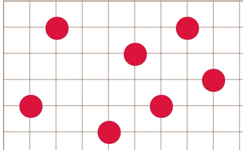

Ура! Чистая победа ходившего игрока!
Увы! Техническое поражение ходившего игрока!
Было нарушено правило построения квадратов!
Больше одной общей точки!
Увы! Техническое поражение ходившего игрока!
Было нарушено правило построения квадратов!
Часть одного квадрата внутри другого!
Увы! Техническое поражение ходившего игрока!
Было нарушено правило построения квадратов!
Часть одного квадрата на линии другого!
Два игрока по очереди выставляют на игровое поле шашки. Игрок должен построить созвездие (каждый свое – из шашек своего цвета), состоящее из двух квадратов, пересекающихся в одной общей точке. Примеры выигрышных созвездий:
В качестве игрового поля берется поле из игры ГО. Размер поля фиксирован – 15х15.
В качестве шашек можно использовать камни для игры ГО.
Основа этой игры – научиться распознавать и строить квадраты на игровом поле. Одно созвездие-квадрат можно построить, задав его четырьмя звездами, расположенными в вершинах квадрата.
Цель игры – первым построить созвездие, состоящее из двух квадратов, пересекающихся в одной общей точке. Важно помнить, что в созвездии не должно быть запрещенных комбинаций
Выставляя звезды на игровое поле, важно быть очень внимательным, так как запрещено создавать созвездия из пересекающихся квадратов. Это означает, что нельзя строить два квадрата, имеющие более одной общей точки. Это могут быть:
Помните, что квадраты могут быть не только классические (с горизонтальными и вертикальными сторонами) и диагональные (со сторонами в диагональных направлениях). Для успешной игры Вам нужно научиться находить и создавать нестандартные квадраты, которые сразу, возможно не бросаются в глаза. Например, такую выигрышную комбинацию можно осуществить:
